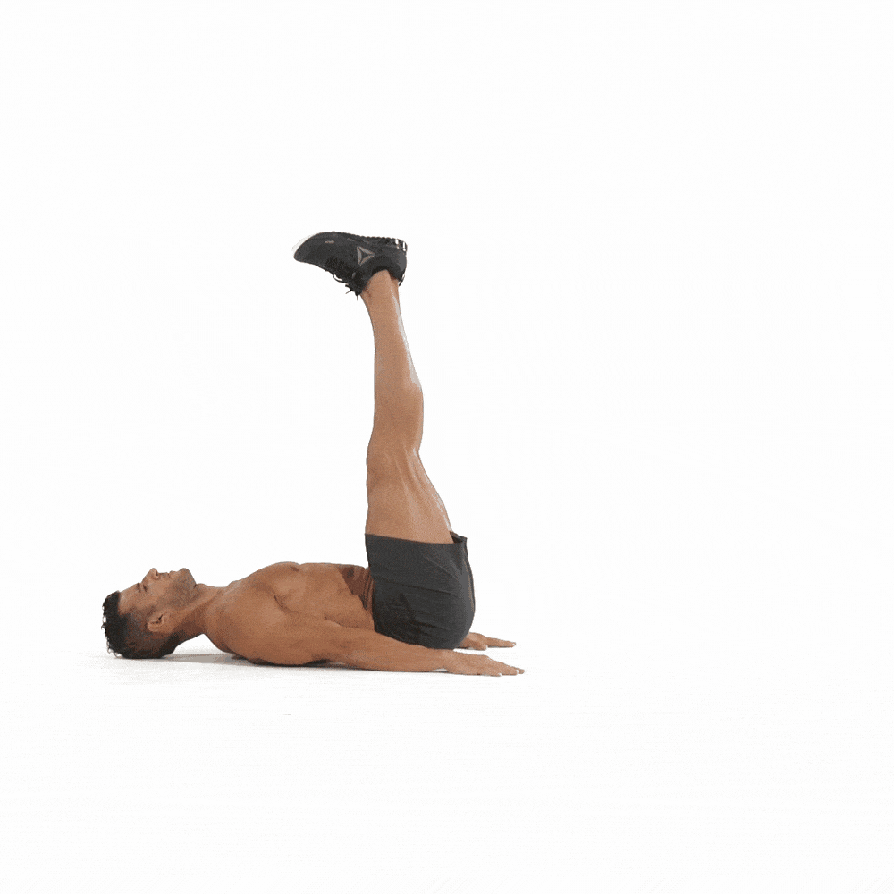
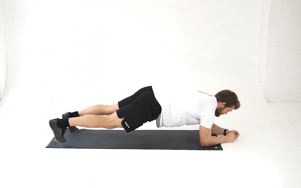
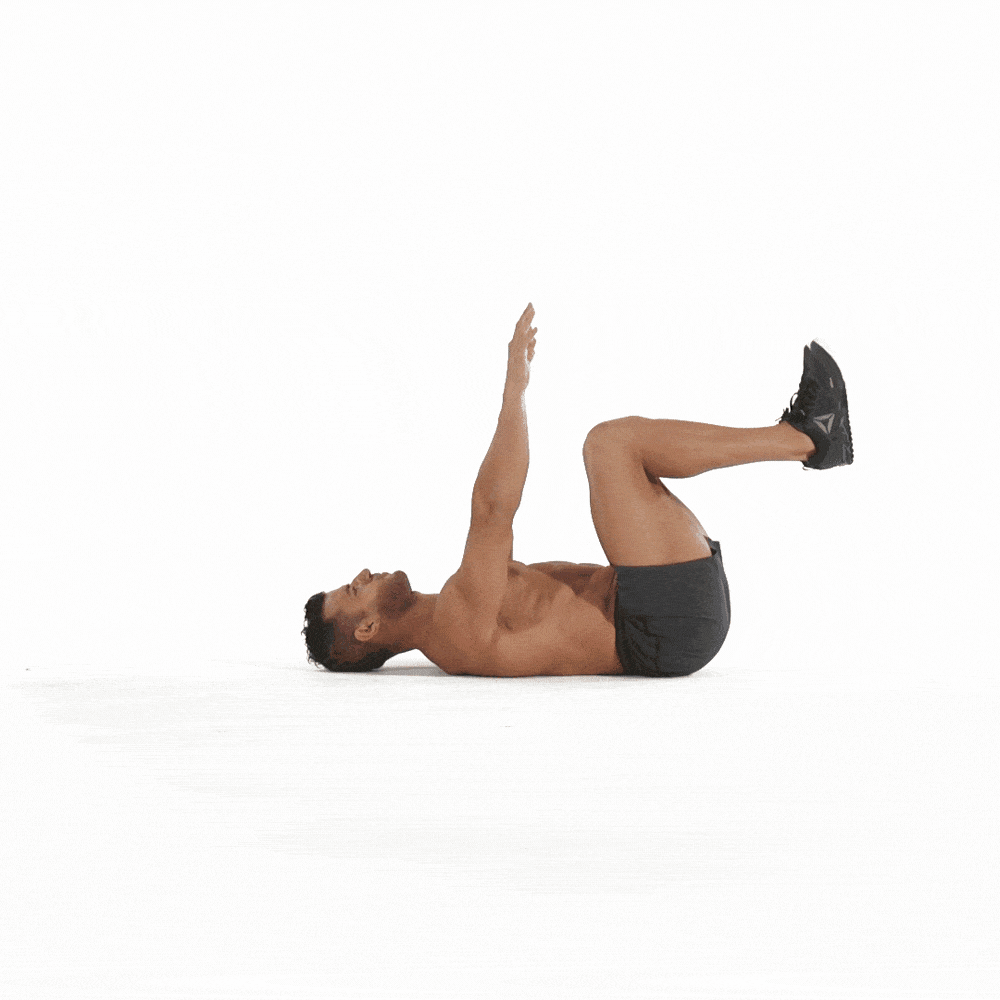

Técnica: Acostado boca arriba, levanta las piernas manteniéndolas rectas hasta formar un ángulo de 90 grados con el suelo.
Técnica: Acostado boca arriba, flexiona las rodillas y levanta las caderas hacia arriba apretando los glúteos.

Técnica: En posición de cuatro patas, extiende un brazo y la pierna opuesta, mantén y cambia de lado.
Técnica: Acostado boca arriba, lleva un brazo y la pierna opuesta hacia abajo mientras mantienes la espalda baja pegada al suelo.
